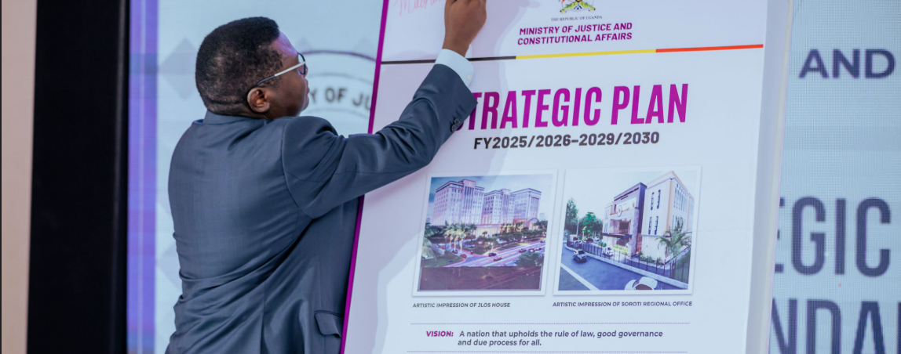

JLOS operates as a Sector-Wide Approach (SWAp), coordinating nearly one-third of government institutions under a shared strategic framework. Since 2001, five successive plans have guided the sector's reform agenda — each building on the achievements and lessons of the last.
The Justice, Law, and Order Sub-programme is embedded within the national planning framework as a sector-wide approach (SWAp), which began as an initial, locally based pilot and has evolved into a collaboration that brings together nearly one-third of government institutions. JLOS brings together state and non-state actors who play complementary roles in planning, budgeting, programme implementation, monitoring, and evaluation.
The SDP V has six major sections:
The JLOS 4th Sector Development Plan (SDP IV) builds on earlier achievements to strengthen the rule of law, enhance safety and security of property, and expand access to justice for inclusive growth.
Under the previous plan (SIP III), JLOS improved public trust from 26% to 48%, service satisfaction from 59% to 72%, and expanded access to services across 82% of districts. Crime rates and case backlogs reduced, while Uganda's ease of doing business ranking improved. However, challenges such as limited rural access, outdated technology, corruption, prison congestion, and new crimes like cybercrime remained.
The plan, costing UGX 5.7 trillion, is funded mainly by government and development partners. Implementation involves all 18 JLOS institutions with strong monitoring and evaluation systems, annual reviews, and a midterm assessment to ensure accountability and results.
Download SDP IV (PDF)JLOS in Uganda has become a regional model for justice and law reform coordination. Built on a rights-based approach, JLOS brings together over 15 institutions working in family, land, commercial, and criminal justice. SIP III was developed to deepen reforms, strengthen institutional capacity, and expand access to justice for all Ugandans — especially the poor and vulnerable.
SIP III aligns with Uganda's National Development Plan and international human rights commitments, aiming to uphold rights enshrined in the 1995 Constitution and major UN and African human rights instruments.
The Second Strategic Investment Plan builds on the progress of SIP I (2001–2006), aiming to deepen justice sector reforms with a stronger focus on the poor and marginalised. The plan seeks to improve service delivery, human rights, access to justice, and poverty reduction across Uganda, including conflict-affected regions.
SIP II is aligned with Uganda's Poverty Eradication Action Plan (PEAP), focusing on promoting wealth creation and competitiveness through justice and stability, reducing crime and legal uncertainty, and enhancing justice in Commercial, Land, Family, and Criminal sectors.
Total projected budget of UGX 600.3 billion over three years (~4.9% of national budget), with emphasis on transparency, efficiency, and stakeholder engagement including civil society and the private sector.
Download SIP II (PDF)Despite the social, economic, and political challenges faced, SIP I recorded impressive achievements. Its greatest success was building a sense of unity among justice sector institutions, which by SIP II had come to view JLOS as a coordination and communication framework rather than just a funding tool. The Sector-Wide Approach (SWAp) improved aid management, coherence, and predictability.
SIP I laid the institutional foundation for all subsequent JLOS plans. SIP II refined objectives to expand access to justice for the poor and marginalised, adding Land and Family Justice as new focus areas, and demonstrated that sustained commitment is required to ensure the continuity of reforms.
Download SIP I (PDF)